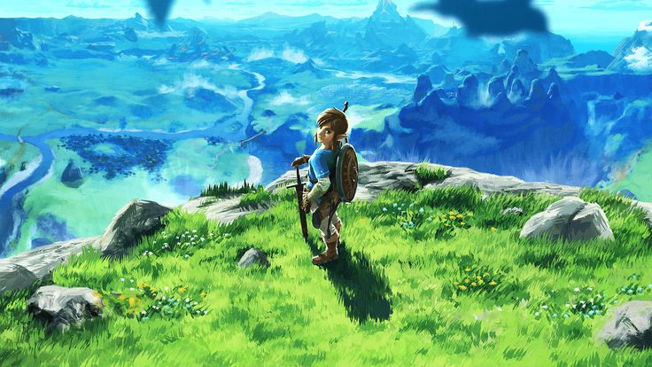
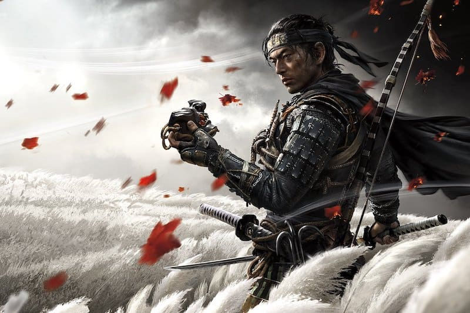
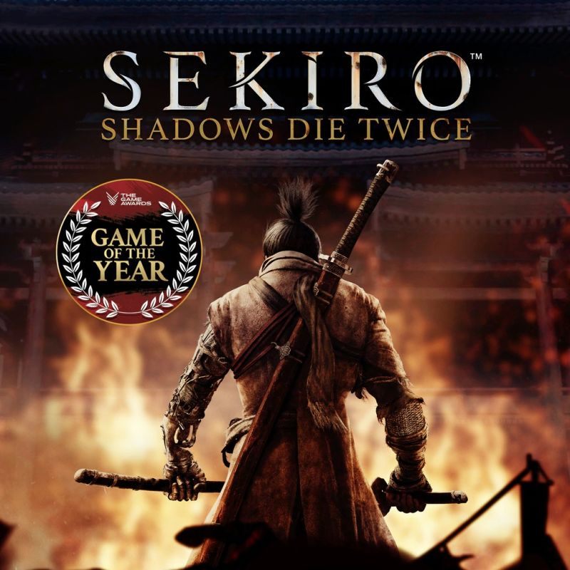
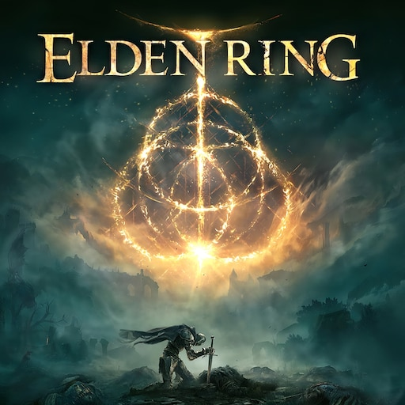

When it comes to the best adventure games, plenty of exciting experiences are on offer.
From setting out across sprawling worlds to journeying through memorable stories and diving into action-packed quests,
there's no shortage of adventures across all platforms. No matter what you're playing on, whether PC or console,
we've picked the best four games to experience through, so you're sure to find something to keep you busy.
With many featuring loveable and iconic characters, this selection covers a broad range
of games that all capture a sense of adventure.
So join as we take you through the best adventure games you can jump into right now:
Breath Of The Wild

After a 100-year slumber, Link wakes up alone in a world he no longer remembers.
Now the legendary hero must explore a vast and dangerous land and regain his memories before Hyrule is lost forever.
Armed only with what he can scavenge, Link sets out to find answers and the resources needed to survive. |
Ghost Of Tsushima

Ghost of Tsushima is a third-person open-world action-stealth video game developed by Sucker Punch Productions exclusively for the PlayStation 4. It takes place in 1274 on the island of Tsushima in Japan.
The player controls the hero, Jin Sakai, as he fights back against a Mongol invasion. |
Sekiro: Shadows Die Twice

Sekiro: Shadows Die Twice is a 2019 action-adventure game developed by FromSoftware and published by Activision.
The game follows a shinobi known as Wolf,
who attempts to take revenge on a samurai clan that attacked him and kidnapped his lord. |
Elden Ring

Elden Ring is an action role-playing game played in a third person perspective,
with gameplay focusing on combat and exploration. It features elements similar to those found in other games developed by FromSoftware,
such as the Dark Souls series, Bloodborne, and Sekiro: Shadows Die Twice. |